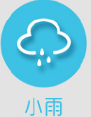

<!DOCTYPE HTML PUBLIC "-//W3C//DTD HTML 4.01 Transitional//EN">
<html>
  <head>
    <title>ajaxp.html</title>
	
    <meta http-equiv="keywords" content="keyword1,keyword2,keyword3">
    <meta http-equiv="description" content="this is my page">
    <meta http-equiv="content-type" content="text/html; charset=UTF-8">
    <script type="text/javascript" src="jquery-3.1.0.js"></script>
    <!--<link rel="stylesheet" type="text/css" href="./styles.css">-->
	<script type="text/javascript">
		$(function(){
			$("#a").click(function(){
				var addCode=$("#addCode").val();
				var url="http://restapi.amap.com/v3/weather/weatherInfo";
				$.ajax({
				//请求的method类型
				   type: "POST",
				   //请求路径
				   url: url,
				   //将返回的字符串转化成json对象（Json.parse(返回字符串)）
				   dataType:'json',
				   //默认异步 
				   async:true,
				   //请求响应的回调函数 参数1就是写回的json数据 
				   data:"key=3f3dc20c601a504683b37cd329a8456e&city="+addCode;
				   success: function(msg){
				     var w=msg.lives[0].weather;
				     //每次将div销毁
				     $("div").remove();
				     if(w=="晴"){
				     	$(document.body).append("<div></div>");
				     }else if(w=="多云"){
				     	$(document.body).append("<div></div>");
				     }else{
				     	$(document.body).append("<div></div>");
				     }
				   },
				   error:function(xhr, textStatus, errorThrown){
				  		alert("调用失败"+errorThrown);
				   }
				});
			});
		})
	</script>
  </head>
  
  <body>
    <input id="addCode"  type="text"/><input id="a" type="button" value="查询天气"/><br/>
    
    <br/>
    <input  type="text"/><input id="b" type="button"  value="输入IP定位"/>
  </body>
</html>
